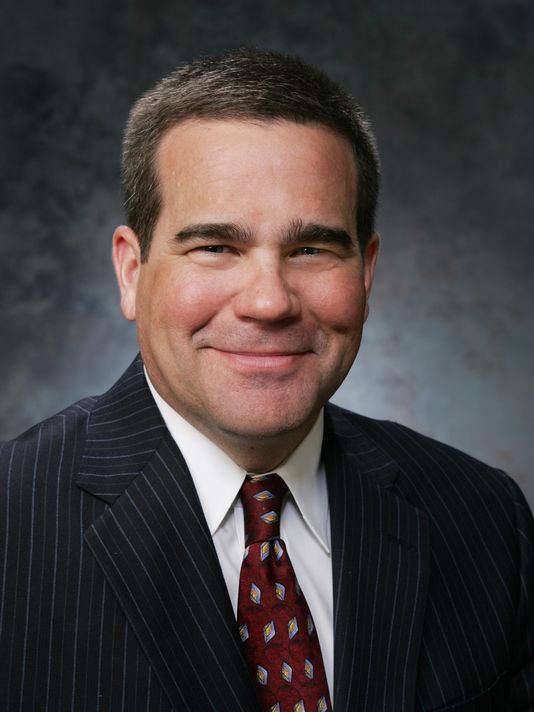

Dan Houston
| Chairman, President and CEO | Principal
I've spent my entire career with one company - Principal. In looking back, I feel fortunate to be part of such an extraordinary organization: one with uncompromising commitment to customers; one that embraces change without sacrificing its foundational core values; and one with such a long history of good decision-macking and strong execution
As I think about the future, the first thing that comes to mind is talent. I can think of no greater talent success story for the organization that what we've achieved with Principal Global Services (PGS), from the seeds we planted 10 years ago. I take particular pride in this success because I had the privilege of bring part of the original site selection team. Early on we saw something truly special in Pune.

Gary Scholten
| EVP & Chief Information Officer | Principal
Right from the beginning, our intention was for PGS to inherent the many strong parts of the Principal's culture but balancing that with local needs to make PGS a premier employer in Pune. That meant living PFG core values, giving back Pune to make better, building an inclusive environment in which everyone can do their best work and doing it all with strong collaboration. I'm very proud to say that PGS leaders and employees have created and maintained precisely that environment over the 10 year history of PGS

Kaushik Majumdar
| Managing Director | Principal Global Services
A decade since inception, Principal-Pune is poised to move into the next orbit - from providing services to providing solutions, on the way to become a strategic partner to the Principal businesses. We are evolving from from an offshore delivery center into a responsibility center - a center of excellence and innovation. With its visibility across business units and grographies, Principal-Pune is a microcosm of the enterprise and will be a forerunner whenever we speak of One Principal. The phase we are going through is a metamorphosis for the Pune team, and the road ahead has great promise.